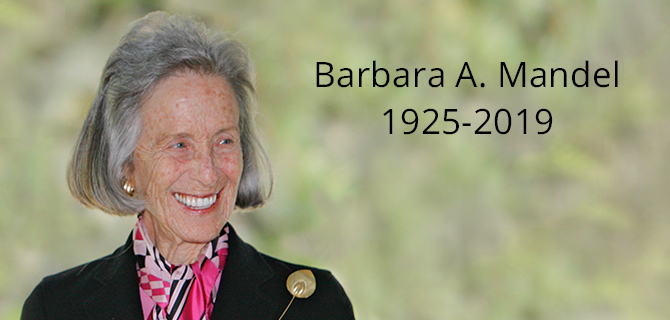

Barbara A. Mandel, life-long volunteer, highly respected philanthropist, social justice advocate and wife of 70 years to distinguished businessman Morton L. Mandel (z"l) died on November 21, 2019 at the age of 93 years old. A self-proclaimed feminist, Mrs. Mandel was a born leader with a true philanthropic spirit intent on making a difference.
A native of Cleveland, Ohio, Barbara A. Mandel lived in Palm Beach, Florida at the time of her death. She attended Radcliffe College of Harvard University and Flora Stone Mather College of Case Western University, where she received a bachelor's degree. In addition, Mrs. Mandel received honorary degrees from Hebrew University and Brandeis University.
“Barbara Mandel was a compassionate, dedicated individual who believed in the vitality of cultural arts and the importance of the state of Israel to the Jewish community," said Michael Hoffman, President and CEO of Jewish Federation of Palm Beach County. "She loved and cared deeply about the prosperity of the Palm Beaches and boldly led with her philanthropy. She and Mort, her husband of 70 years who passed away just weeks ago, changed the course of our local and global communities and ensured a bright future for generations to come."
Mrs. Mandel was active in the Cleveland area, nationally and in Israel. She served as vice chair of the Jack, Joseph and Morton Mandel Foundation, and in Cleveland, served as president of the Cleveland section of the National Council of Jewish Women and Chair of Leadership Development for the Jewish Federation of Cleveland. She was later elected president of the National Council of Jewish Women. Her commitment to education was demonstrated by her service as trustee, Executive Committee member and the co-chairman of a major fundraising campaign at Brandeis University. Her commitment to the arts was exemplified by her many years of service and then as chair of the board of Cooper Hewitt, Smithsonian Design Museum in New York. In Israel, she served as honorary chairman of Hebrew University, as deputy chairman of the Executive Committee, and as co-chairman of its international fundraising campaign. She also served as the president of the American Friends of Hebrew University.
"Barbara had a warrior spirit and deep compassion for people. She believed that every person has the responsibility to make their corner of the world a better place," said Caroline Baumann, director of Cooper Hewitt, Smithsonian Design Museum. "Forthright and fiercely intelligent, she always had the ability to rally people to meet the needs at hand with such emotion, conviction and inspiration."
In a speech delivered to hundreds at a national convention, Mrs. Mandel remarked, "I am confident, that we will use our time, talent, training and resources, alone and in coalition, to nudge our society forward so that when future generations look back at this decade, they will remember it as another of those great historic eras in which America flowered, in which the nation’s spirit and vitality rose to meet the challenge – a decade, in short, in which the promise of America was met."
Civic and philanthropic activities were an important aspect of Mrs. Mandel’s life. Mrs. Mandel helped fund several substantial foundations for charitable purposes, including the Morton and Barbara Mandel Family Foundation and Morton and Barbara Mandel Supporting Foundation. The focus of her philanthropy included leadership education programs, higher education, human services and the arts.
Mrs. Mandel’s efforts on the civic front did not go unnoticed. During her lifetime, she received the Annual Hannah G. Solomon Award from the National Council of Jewish Women and was elected to Ohio Women’s Hall of Fame. She was also a life trustee of the Jewish Federation of Cleveland.
“Barbara remained an active and respected volunteer well into her 90s" said Jehuda Reinharz, president and CEO of the Jack, Joseph and Morton Mandel Foundation and president emeritus of Brandeis University. "Her insights and wisdom continue to inspire a new generation of volunteers and leaders. Her wisdom is just one of her myriad legacies."
Mandel once remarked at a National Council of Jewish Women event, "In the midst of all of our current troubles, it helps to know that we have overcome dangers in our past as serious as any we face today. We are an optimistic people, a people capable of tapping unknown sources of energy and commitment to meet new dangers that may appear. If we see further today, and can do more today, it is because we stand on the shoulders of the giants of our history. They remind us of the greatness of our past, and they give us new strength to meet our future. In the face of all the challenges around us, the greatest sin is our inaction. We have the strength to meet our task and we have proven repeatedly that we have the will…"
Mrs. Mandel is survived by her daughters, Amy Mandel and Stacy (Keith) Palagye, and her son Thomas (Lisa) Mandel; her grandchildren, Alicia Mandel, Daniela Mandel, Wilson Petricig, Jack Petricig, Daniel Mandel, Sherilyn (Phil) Ciccarelli, Lilian Rose Palagye, Olivia Lyn Palagye; and her great-granddaughters, Amora Mandel Carson and Chloe Ciccarelli.
Private internment; a memorial service will be held at a date and time to be announced.
{kind=link}